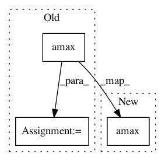

557fea369f48500b30bda8d2f1572ac4c4ebad55,secuml/core/clustering/algos/gaussian_mixture.py,GaussianMixture,get_predicted_proba,#GaussianMixture#,42
Before Change
def get_predicted_proba(self):
all_probas = self.pipeline.predict_proba(
self.instances.features.get_values())
predicted_proba = np.amax(all_probas, axis=1)
return predicted_proba
def get_all_proba(self):
all_probas = self.pipeline.predict_proba(
After Change
def get_predicted_proba(self):
all_probas = self.get_all_proba()
return np.amax(all_probas, axis=1)
def get_all_proba(self):
features = self.instances.features.get_values()
return self.pipeline.predict_proba(features)
In pattern: SUPERPATTERN
Frequency: 4
Non-data size: 3
Instances
Project Name: ANSSI-FR/SecuML
Commit Name: 557fea369f48500b30bda8d2f1572ac4c4ebad55
Time: 2019-09-03
Author: anael.beaugnon@ssi.gouv.fr
File Name: secuml/core/clustering/algos/gaussian_mixture.py
Class Name: GaussianMixture
Method Name: get_predicted_proba
Project Name: apache/incubator-mxnet
Commit Name: 95f5cc60904a2d88d4861fff0f6dbad15f8cdbe3
Time: 2020-10-06
Author: zhaoqizhu96@gmail.com
File Name: tests/nightly/test_np_large_array.py
Class Name:
Method Name: test_amax
Project Name: mne-tools/mne-python
Commit Name: 544989c7ff9922e04bddad72c1b13156ce344ace
Time: 2019-02-15
Author: alexandre.gramfort@m4x.org
File Name: mne/rank.py
Class Name:
Method Name: _estimate_rank_from_s
Project Name: SpiNNakerManchester/sPyNNaker
Commit Name: ca559f81d5dba180acf35b8a934eaefb8bd89f97
Time: 2017-12-15
Author: donal.k.fellows@manchester.ac.uk
File Name: spynnaker/pyNN/models/neural_projections/connectors/small_world_connector.py
Class Name: SmallWorldConnector
Method Name: get_n_connections_to_post_vertex_maximum